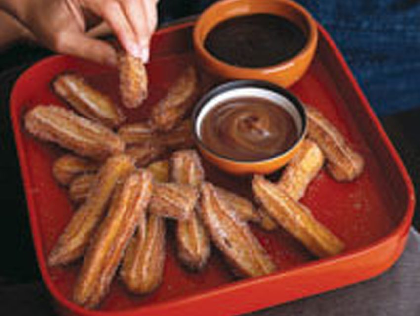
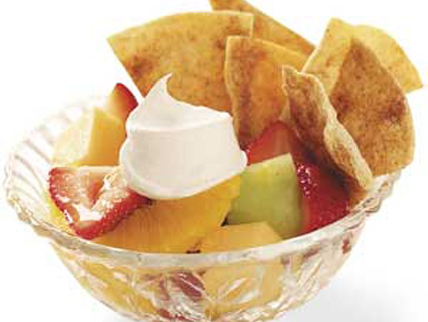
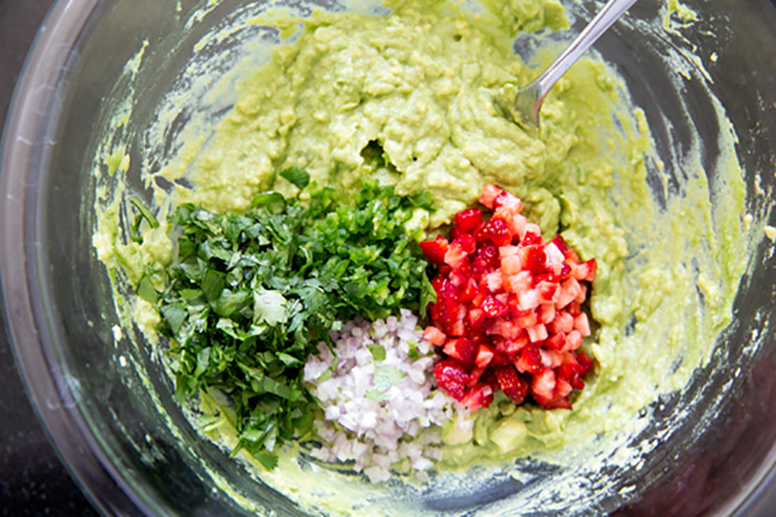

Desserts
Cinnamo nSugar Churros

ingredients
- 1 tbsp. grated orange zest
- 1 c. fresh orange juice
- ½ c. unsalted butter
- 2 tbsp. sugar
- ¼ tsp. salt
- 2 c. all-purpose flour
- 4 large eggs
- vegetable oil
- 1 c. sugar
- ½ tsp. ground cinnam
Instructions
1.In a 5-quart Dutch oven, bring orange zest, orange juice, buttermilk, butter, sugar, and salt to a boil. Add flour, all at once, stirring vigorously with a wooden spoon. Cook until mixture forms a ball. Remove from heat and cool 10 minutes.
2.Add eggs, one at a time, beating until fully incorporated and dough is smooth and slightly elastic. Spoon dough into a 16- to 18-inch pastry bag fitted with a large star tip with a 1/2-inch opening. Line 2 large cookie sheets with waxed paper.
Pipe dough into 3 1/2-inch-long strips onto prepared cookie sheets (you'll get about 60 strips). Place sheets in freezer 10 to 15 minutes to harden slightly; do not freeze solid.
3.Wash out and dry Dutch oven; fill with 2 inches vegetable oil; attach a deep-fry thermometer to inside of pot. Heat oil over medium heat to 360 degrees F. Using a small spatula dipped in flour, transfer churros, 8 at a time, to hot oil and fry,
turning with slotted spoon, until deep golden brown, about 4 minutes per batch. Drain on paper towels. Toss in cinnamon sugar. Fry remaining churros. Serve warm with dipping sauces
Fiesta Fruit Cups

Ingredients
- 6 flour tortillas (6 inches)
- 3 tablespoons butter, melted
- 3 tablespoons cinnamon-sugar
- 2 cups halved fresh strawberries
- 1 cup cubed cantaloupe
- 1 cup cubed honeydew
- 1 large navel orange, peeled and sectioned
- 1/2 cup peach preserves
- Whipped topping and additional strawberries, optional
Instructions
1.Place tortillas on ungreased baking sheets. Brush with butter; sprinkle with cinnamon-sugar. Cut each tortilla into six wedges.
2.Bake at 350° for 12-15 minutes or until lightly browned. Cool on wire racks.
3.Meanwhile, in a large bowl, combine the strawberries, melons and orange. Stir in preserves. Using a slotted spoon, spoon into dessert cups.
4.Serve with tortilla chips. Garnish with whipped topping and additional strawberries if desired. (Fiesta-Fruit-Cups)
Strawberry Guacamole

Ingredients
- 2 ripe medium-large avocados, halved, pitted and scooped
- 1 shallot, finely minced (about 1 1/2 tablespoons)
- 1 fresh jalapeno or habanero, stemmed, seeded, deveined and finely chopped
- 1 lime, finely zested and juiced
- 3 tablespoons loosely packed chopped fresh cilantro
- 4 ounces ripe strawberries, chopped, plus a little extra for garnishSalt, to taste
Instructions
In a bowl, mash avocados with a potato masher or a fork until coarsely mashed. Add the shallot, jalapeno, lime zest and juice (about 2 tablespoons), chopped cilantro, and strawberries, and fold until incorporated. Season to taste with salt. Serve immediately,
sprinkled with additional chopped strawberries for garnish, or cover with plastic wrap pressed directly onto the surface and refrigerate for up to 4 hours or until ready to serve.